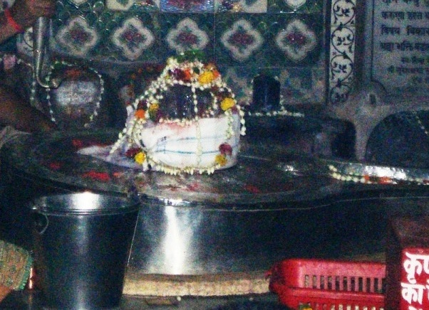

<?xml version="1.0" encoding="UTF-8"?><rss version="2.0"
	xmlns:content="http://purl.org/rss/1.0/modules/content/"
	xmlns:wfw="http://wellformedweb.org/CommentAPI/"
	xmlns:dc="http://purl.org/dc/elements/1.1/"
	xmlns:atom="http://www.w3.org/2005/Atom"
	xmlns:sy="http://purl.org/rss/1.0/modules/syndication/"
	xmlns:slash="http://purl.org/rss/1.0/modules/slash/"
	>

<channel>
	<title>Muchkundeshwar &#8211; Varanasi Temples</title>
	<atom:link href="index.html" rel="self" type="application/rss+xml" />
	<link>../../../../../index.html</link>
	<description>Temples of Varanasi as referred to in Kashi Khand</description>
	<lastBuildDate>Thu, 19 Jun 2025 05:16:46 +0000</lastBuildDate>
	<language>en-US</language>
	<sy:updatePeriod>hourly</sy:updatePeriod>
	<sy:updateFrequency>1</sy:updateFrequency>
	<generator>https://wordpress.org/?v=4.6.29</generator>
	<item>
		<title>MUCHKUNDESHWAR</title>
		<link>../../../../../shiva-temples/muchkundeshwar/index.html</link>
		<pubDate>Mon, 10 May 2010 15:29:23 +0000</pubDate>
		<dc:creator><![CDATA[admin]]></dc:creator>
				<category><![CDATA[Muchkundeshwar]]></category>
		<category><![CDATA[Other Shiva Temples (L-R)]]></category>
		<category><![CDATA[Shiva Temples]]></category>
		<category><![CDATA[kodai chiwk]]></category>

		<guid isPermaLink="false">../../../../../p=426.html</guid>
		<description><![CDATA[Kashi Khand, Chapter 97 mentions various Shiv Lings all around Kashi. Among various Lings, Kashi Khand mentions one important Shiv Ling named Muchkundeshwar. (MUCHKUNDESHWAR) This Ling is said to have been installed by the great Sage Muchkunda. Devotees who worship this Ling will derive all happiness and will attain Moksha. LOCATION OF MUCHKUNDESHWAR Muchkundeshwar is known [&#8230;]]]></description>
				<content:encoded><![CDATA[<p>Kashi Khand, Chapter 97 mentions various Shiv Lings all around Kashi.</p>
<p>Among various Lings, Kashi Khand mentions one important Shiv Ling named Muchkundeshwar.</p>
<p></p>
<p style="text-align: center;"><strong>(MUCHKUNDESHWAR)</strong></p>
<p>This Ling is said to have been installed by the great Sage Muchkunda.</p>
<p style="text-align: left;">Devotees who worship this Ling will derive all happiness and will attain Moksha.</p>
<p><strong><span style="text-decoration: underline;">LOCATION OF MUCHKUNDESHWAR</span></strong></p>
<p>Muchkundeshwar is known by the name of Baradeo and is located near Jaipuria Bhavan (Godowlia area) on the left turning near the Bhavan. This turning leads to Kodai Chowki.  In fact, the locality is also known as Baradeo.</p>
<p>&nbsp;</p>
<p><strong>Please watch our YouTube Video about Muchkundeshwar at following Link</strong></p>
<p>&nbsp;</p>
<p><a href="https://www.youtube.com/watch?v=_QM9964hhtM&amp;t=27s">https://www.youtube.com/watch?v=_QM9964hhtM&amp;t=27s</a></p>
<p>&nbsp;</p>
<p><strong><span style="text-decoration: underline;">TYPES OF POOJA</span></strong></p>
<p>The temple is open for worship from 06.00 a.m. to 11.00 a.m. and from 05.00 p.m. to 09.00 p.m.  Aarties are held in the morning and evening.</p>
]]></content:encoded>
			</item>
	</channel>
</rss>
